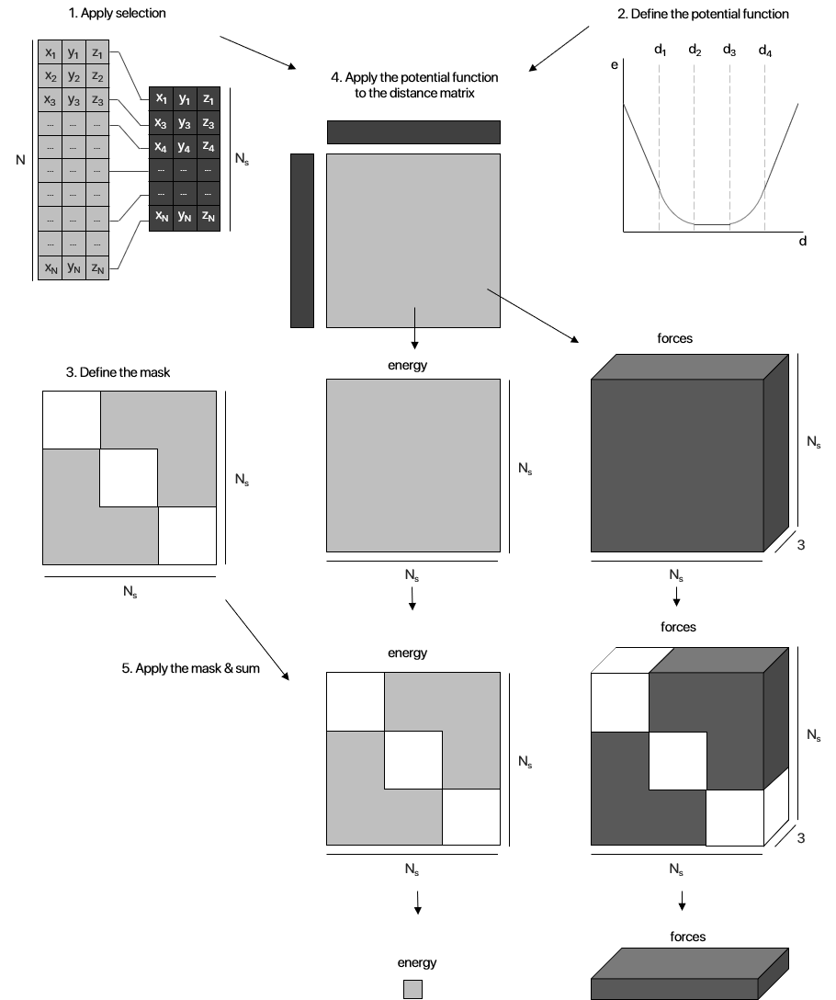
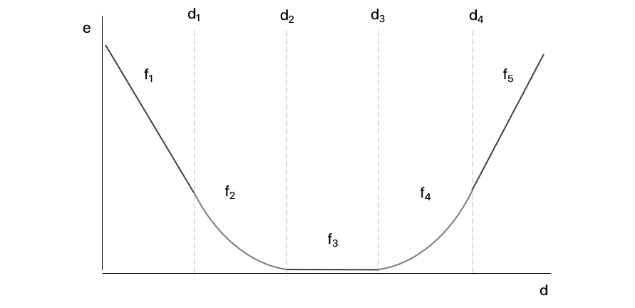

Potential restraints
Potential restraints are a family of EnergyFunctionComponent instances that apply any given potential to a selection of Atom instances, optionally further masked or mapped. In other words, the application of a potential restraint to a Pose is characterized by a series of fully customizable steps to generate new and/or improved Potential restraints:
- (Optional) Select a subset of
Atominstances to apply the potential; - Define the potential function to be applied (See Available potentials);
- Apply the potential mask to the selected
Atominstances; - (Optional) Multiply a mask/map to the calculated energy and forces matrices;
- Sum the calculated energy and forces matrices.
As of ProtoSyn 1.0, no Core potential restraint is available, as most of these EnergyFunctionComponent instances are specific for a certain type of molecules (such as Peptides). The following types and methods constitute the backbone for all Potential restraints. Specific applications can be found in other modules of ProtoSyn.

Figure 1 | A diagram representation of the application of a potential restraint, in ProtoSyn. A given potential function (See Available potentials) is applied to a distance matrix (See Distance matrix calculation) calculated from the distances between all selected Atom instances. The resulting 2D energy matrix includes the energy values for each pair of interacting Atom instances. An optional secondary output from the application of the potential function is a 3D forces matrix, with the forces felt on each atom from the interaction with its pair. Both these matrices can optionally suffer another step: the application of a mask or map. On one hand, a Mask, similarly to its application in AbstractSelections, turns on and off certain pairs of interacting atoms. As an example, a mask allows the user to ignore same-atom energy artifacts using a diagonal_mask or ignore interaction between atoms of the same residue using an intra_residue_mask. On the other hand, a map in a 2D matrix (with the same size as the 2D energy matrix) with weights and biases. When the two matrices are multiplied together, certain interaction strengths are increased while others are reduced. An example would be the application of a contact map, where each weight corresponds to the certainty factor for the distance between each of the considered Atom pairs. As a final step both the 2D energy matrix and the 3D forces matrix (optionally after the application of the mask/map) are summed (in both axis, in the case of energy calculation, and in one axis, in the case of forces calculation).
The above paradigm for application of potential restraints requires, for the correct calculation of forces, the full_distance_matrix to be considered. This causes the energy value calculated to be double the expected (not considering the application on any non diagonally symmetrical mask), as both the top and bottom triagonal matrices are considered. In most cases this is not an issue, as the energy values are compared between simulation frames in relation to eachother and therefore the scale of the value is not important. However, in specific applications, further adjustment of the potential and/or mask applied may be necessary.
ProtoSyn.Calculators.apply_potential — Functionapply_potential([::Type{A}], coords::Vector{T}, potential::Function) where {A <: ProtoSyn.AbstractAccelerationType, <: AbstractFloat}
apply_potential([::Type{A}], coords::Vector{T}, potential::Function, mask::Union{ProtoSyn.Mask{C}, Matrix{T}}) where {A <: ProtoSyn.AbstractAccelerationType, T <: AbstractFloat, C <: ProtoSyn.AbstractContainer}Apply the given potential to the provided coords, return the total energy of the system and matrix of forces felt on each atom (forces are always calculated). If a mask is provided, the resulting energy and force matrix are multiplied by this mask (See Available masks for a list of default masks is provided in ProtoSyn.Calculators module). The potential function should receive a distance::T and return an energy value e::T. If it receives an optional tuple v::Tuple{T, T, T}, it should also return the forces f1::Tuple{T, T, T} and f2::Tuple{T, T, T} felt on both ends of the vector, based on the given distance::T (See Available potentials for a list of default potential functions available in ProtoSyn.Calculators module and Creating custom potential functions for the correct function signatures of new potentials). An optional parameter Type{<: AbstractAccelerationType} can be provided, stating the acceleration type used to calculate this energetic contribution (See ProtoSyn acceleration types). Note that this function is usually called by giving a full Pose pose, using the function signatures bellow:
Selection | Mask
apply_potential([::Type{A}], pose::Pose, potential::Function, mask::Union{ProtoSyn.Mask{C}, Matrix{T}}, selection::AbstractSelection) where {A <: ProtoSyn.AbstractAccelerationType, T <: AbstractFloat, C <: ProtoSyn.AbstractContainer}
apply_potential([::Type{A}], pose::Pose, potential::Function, mask::Function, selection::AbstractSelection) where {A <: ProtoSyn.AbstractAccelerationType}Selection | No Mask
apply_potential([::Type{A}], pose::Pose, potential::Function, mask::Nothing, selection::AbstractSelection) where {A <: ProtoSyn.AbstractAccelerationType}
apply_potential([::Type{A}], pose::Pose, potential::Function, selection::AbstractSelection) where {A <: ProtoSyn.AbstractAccelerationType}Apply the given potential to the selected atoms of Pose pose via the provided selection, return the total energy of the system and matrix of forces felt on each atom. Optionally, multiply the results by a mask (See Available masks). If given (and not equal to nothing), the mask size must match the N selected atoms. Alternatively, the given mask can be a Function, in which case it receives a Pose pose as input (For the correct signature of this Function mask, see Creating custom masks).
No Selection | Mask
apply_potential([::Type{A}], pose::Pose, potential::Function, mask::Union{ProtoSyn.Mask{C}, Matrix{T}}) where {A <: ProtoSyn.AbstractAccelerationType, T <: AbstractFloat, C <: ProtoSyn.AbstractContainer}
apply_potential([::Type{A}], pose::Pose, potential::Function, mask::Function) where {A <: ProtoSyn.AbstractAccelerationType}
apply_potential([::Type{A}], pose::Pose, potential::Function, selection::Nothing, mask::Union{ProtoSyn.Mask{C}, Matrix{T}}) where {A <: ProtoSyn.AbstractAccelerationType, T <: AbstractFloat, C <: ProtoSyn.AbstractContainer}
apply_potential([::Type{A}], pose::Pose, potential::Function, selection::Nothing, mask::Function) where {A <: ProtoSyn.AbstractAccelerationType}No Selection | No Mask
apply_potential([::Type{A}], pose::Pose, potential::Function, mask::Nothing) where {A <: ProtoSyn.AbstractAccelerationType}
apply_potential([::Type{A}], pose::Pose, potential::Function) where {A <: ProtoSyn.AbstractAccelerationType}
apply_potential([::Type{A}], pose::Pose, potential::Function, selection::Nothing, mask::Nothing) where {A <: ProtoSyn.AbstractAccelerationType}
apply_potential([::Type{A}], pose::Pose, potential::Function, selection::Nothing) where {A <: ProtoSyn.AbstractAccelerationType}Apply the given potential to the all atoms of Pose pose, return the total energy of the system and matrix of forces felt on each Atom. If given (and not equal to nothing), the mask size must match the total number of Atom instances in the pose. Alternatively, the given mask can be aFunction, in which case it receives a Pose pose as input (For the correct signature of this Function mask, see Creating custom masks).
As of ProtoSyn 1.0, this function's acceleration type must be CUDA_2. Providing any other acceleration type will result in an error. This may be changed in future iterations.
Examples
julia> fbr = ProtoSyn.Calculators.get_flat_bottom_potential(d1 = 2.0, d2 = 5.0)
...
julia> sidechain = !an"^CA$|^N$|^C$|^H$|^O$"r
UnarySelection ❯ ! "not" (Atom)
└── FieldSelection › Atom.name = r"^CA$|^N$|^C$|^H$|^O$"
julia> mask = ProtoSyn.Calculators.intra_residue_mask(pose, sidechain)
...
julia> e, f = ProtoSyn.Calculators.apply_potential(ProtoSyn.CUDA_2, pose, fbr, mask, sidechain)
(2.1792609341377363, [11.380 … -74.232])ProtoSyn.Calculators.Restraints.calc_flat_bottom_restraint — Functioncalc_flat_bottom_restraint([::Type{A}], pose::Pose, update_forces::Bool; d1::T = 0.0, d2::T = 0.0, d3::T = Inf, d4::T = Inf, selection::Opt{AbstractSelection} = nothing, mask::MaskMap = nothing) where {A <: ProtoSyn.AbstractAccelerationType, T <: AbstractFloat}Apply a flat bottom potential to a given Pose pose. The potential is iteratively obtained each call using the get_flat_bottom_potential method (See Available potentials), by providing the given d1::T (default: 0.0), d2::T (default = 0.0), d3::T (default = Inf) and d4::T (default = Inf) settings as the flat bottom potential distances. This potential then applied to the Pose pose (via the apply_potential method), optionally on a subset of Atom instances given by the AbstractSelection selection and optionally multiplied by a mask. This mask can be a Mask, a Matrix{T} or a Function, in which case it should be a functor (return a Function) (For the correct signature of this Function mask, see Creating custom masks). These 3 options are named MaskMap for a simplicity of organization only. Return the total energy of the system and matrix of forces felt on each atom. Note that the calculation acceleration type can be set by providing an option parameter Type{<: ProtoSyn.AbstractAccelerationType}. If not provided, the default ProtoSyn.acceleration.active will be used instead.
As of ProtoSyn 1.0, the apply_potential acceleration type defaults to CUDA_2 regardless of the requested acceleration type. This may be changed in future iterations.
Examples
```jldoctest julia> ProtoSyn.Calculators.Restraints.calcflatbottom_restraint(pose, true) (0.0, [0.0 0.0 … 0.0 0.0; 0.0 0.0 … 0.0 0.0; 0.0 0.0 … 0.0 0.0])
julia> ProtoSyn.Calculators.Restraints.calcflatbottom_restraint(pose, false, d1 = 10.0, d2 = 12.0) (556449.1936070402, [-711.7603616347209 -630.2662235401388 … 995.0284325254745 1153.572133762037; -419.1275359380875 -548.0506257124055 … 286.5285847489888 92.16862928705675; 6.007398880372552 8.2409631821887 … -99.38257889245355 -92.37110004070036]) ```
Available potentials
A list of available potentials in ProtoSyn is described bellow. See Creating custom potential functions for the required signature of new potential functions.
As of ProtoSyn 1.0, only the get_flat_bottom_potential method is available. In future iterations new potentials (such as linear or quadratic potentials) will be added.
ProtoSyn.Calculators.get_flat_bottom_potential — Functionget_flat_bottom_potential(;d1::T = 0.0, d2::T = 0.0, d3::T = Inf, d4::T = Inf) where {T <: AbstractFloat}Return a flat-bottom potential function, using the specified distances. The potential is made up of 5 different sectors, each with the following functions:
\[f_{1}) \;\;\;\;\;\; e = m_{1} \cdot d + b_{1} \;\;\;\;\;\; \left \{ d < d_{1} \right \}\,\;\;\;\;\;\;\;\;\;\;\;\;\;\;\;\;\;\;\;\;\;\;\;\;\;\;\;\;\;\;\;\;\;\;\;\;\;\;\;\;\;\;\;\;\;\;\;\;\;\;\;\;\;\;\;\;\;\;\;\;\;\;\;\;\;\;\;\;\;\;\;\;\;\;\;\;\;\;\;\;\;\]
\[f_{2}) \;\;\;\;\;\; e = \left (d-d_{2} \right )^{2} \;\;\;\;\;\;\;\; \left \{ d_{1} \leqslant d < d_{2} \right \}\;\;\;\;\;\;\;\;\;\;\;\;\;\;\;\;\;\;\;\;\;\;\;\;\;\;\;\;\;\;\;\;\;\;\;\;\;\;\;\;\;\;\;\;\;\;\;\;\;\;\;\;\;\;\;\;\;\;\;\;\;\;\;\;\;\;\;\;\;\;\;\;\;\;\;\]
\[f_{3}) \;\;\;\;\;\; e = 0 \;\;\;\;\;\;\;\;\;\;\;\;\;\;\;\;\;\;\;\; \left \{ d_{2} \leqslant d \leqslant d_{3} \right \}\;\;\;\;\;\;\;\;\;\;\;\;\;\;\;\;\;\;\;\;\;\;\;\;\;\;\;\;\;\;\;\;\;\;\;\;\;\;\;\;\;\;\;\;\;\;\;\;\;\;\;\;\;\;\;\;\;\;\;\;\;\;\;\;\;\;\;\;\;\;\;\;\;\;\;\]
\[f_{4}) \;\;\;\;\;\; e = \left (d-d_{3} \right )^{2} \;\;\;\;\;\;\;\; \left \{ d_{4} < d \leqslant d_{4} \right \}\;\;\;\;\;\;\;\;\;\;\;\;\;\;\;\;\;\;\;\;\;\;\;\;\;\;\;\;\;\;\;\;\;\;\;\;\;\;\;\;\;\;\;\;\;\;\;\;\;\;\;\;\;\;\;\;\;\;\;\;\;\;\;\;\;\;\;\;\;\;\;\;\;\;\;\]
\[f_{5}) \;\;\;\;\;\; e = m_{2} \cdot d + b_{2} \;\;\;\;\;\; \left \{ d > d_{4} \right \}\,\;\;\;\;\;\;\;\;\;\;\;\;\;\;\;\;\;\;\;\;\;\;\;\;\;\;\;\;\;\;\;\;\;\;\;\;\;\;\;\;\;\;\;\;\;\;\;\;\;\;\;\;\;\;\;\;\;\;\;\;\;\;\;\;\;\;\;\;\;\;\;\;\;\;\;\;\;\;\;\;\;\]
Where
\[m_{1} = 2 \left ( d_{1}-d_{2} \right ) \;\;\;\;\;\;\;\;\;\;\;\;\;\;\;\;\;\;\;\;\;\;\;\;\;\;\;\;\;\;\;\;\;\;\;\;\;\;\;\;\;\;\;\;\;\;\;\;\;\;\;\;\;\;\;\;\;\;\;\;\;\;\;\;\;\;\;\;\;\;\;\;\;\;\;\;\;\;\;\;\;\;\;\;\;\;\;\;\;\;\;\;\;\;\;\;\;\;\;\;\;\;\;\;\;\;\;\;\;\;\;\;\]
\[b_{1} = f_{2}\left ( d_{1} \right ) - m_{1} \cdot d_{1} \;\;\;\;\;\;\;\;\;\;\;\;\;\;\;\;\;\;\;\;\;\;\;\;\;\;\;\;\;\;\;\;\;\;\;\;\;\;\;\;\;\;\;\;\;\;\;\;\;\;\;\;\;\;\;\;\;\;\;\;\;\;\;\;\;\;\;\;\;\;\;\;\;\;\;\;\;\;\;\;\;\;\;\;\;\;\;\;\;\;\;\;\;\;\;\;\;\;\;\;\;\;\;\;\;\]
\[m_{2} = 2\left ( d_{4} - d_{3} \right ) \;\;\;\;\;\;\;\;\;\;\;\;\;\;\;\;\;\;\;\;\;\;\;\;\;\;\;\;\;\;\;\;\;\;\;\;\;\;\;\;\;\;\;\;\;\;\;\;\;\;\;\;\;\;\;\;\;\;\;\;\;\;\;\;\;\;\;\;\;\;\;\;\;\;\;\;\;\;\;\;\;\;\;\;\;\;\;\;\;\;\;\;\;\;\;\;\;\;\;\;\;\;\;\;\;\;\;\;\;\;\;\;\]
\[b_{2} = f_{4}\left ( d_{4} \right ) - m_{2} \cdot d_{4} \;\;\;\;\;\;\;\;\;\;\;\;\;\;\;\;\;\;\;\;\;\;\;\;\;\;\;\;\;\;\;\;\;\;\;\;\;\;\;\;\;\;\;\;\;\;\;\;\;\;\;\;\;\;\;\;\;\;\;\;\;\;\;\;\;\;\;\;\;\;\;\;\;\;\;\;\;\;\;\;\;\;\;\;\;\;\;\;\;\;\;\;\;\;\;\;\;\;\;\;\;\;\;\;\;\]
The resulting function can be called with the following signature:
flat_bottom_potential(d::T; v::Opt{Vector{T}} = nothing) where {T <: AbstractFloat}Return an energy value based on the provided distance d. If a vector v is also provided (optional), the flat-bottom restraint will also return the forces f1 and f2 (the forces felt on both ends of the vector v). The vector v should have length = 3, corresponding to the 3 dimensions of the distance between the two Atom instances (X, Y and Z). For more information on the flat-bottom potential, please read: https://www.ncbi.nlm.nih.gov/pmc/articles/PMC4692055/.
See also
apply_potential calc_flat_bottom_restraint
Examples
julia> f = ProtoSyn.Calculators.get_flat_bottom_potential(d1 = 1.0, d2 = 2.0, d3 = 3.0, d4 = 4.0);
julia> f(2.5)
0.0
julia> f(1.73, v = (1.0, 1.0, 1.0))
(0.0729, (0.54, 0.54, 0.54), (-0.54, -0.54, -0.54))
Figure 1 | The flat bottom potential is continuous but divided in 5 sectors. At the extremes, this is a linear potential, becoming quadratic as it nears the central sector, which is flat at y = 0.0 between d2 and d3, allowing some wiggle room to the metric being measured and evaluated. This potential can be unidirectional: flat at y = 0.0 from [0, d3] if d1 = d2 = 0.0 or from [d3, +∞[ if d3 = d4 = +∞.
Creating custom potential functions
Besides the currently Available potentials, users can freely create custom and/or improved potential functions. In order to incorporate these potentials in EnergyFunctionComponent instances (and therefore in EnergyFunction instances), the following signature must be followed.
energy, force1, force2 = new_potential(d::T; v::Opt{Vector{T}} = nothing) where {T <: AbstractFloat}Any function must, therefore, receive a distance value d::T between two Atom instances and return the corresponding energy felt. Optionally, it may receive a vector v::Vector{T}, which is the difference vector between the two Atom positions, in which case the potential should also return the two forces felt on each atom from this energetic interaction.
The newly defined method can then be used in the apply_potential function: for each pair of Atom instances in the full_distance_matrix this potential will be evaluated. The apply_potential (with the new potential) can then be used in a new :calc field of any new EnergyFunctionComponent (with the correct signature, see Creating a custom EnergyFunctionComponent). However, as a general rule of good practice, an extra step is usually included: as exemplified by the get_flat_bottom_potential method, the potential here is actually a functor, returned everytime the get_flat_bottom_potential function is called. A set of settings act as the input of this function (the settings of the encompassing EnergyFunctionComponent), parametrizing the returned potential. Using this approach, the user has complete access to the EnergyFunctionComponent.settings field, which will dictate the parametrization of the newly developed potential. This can be useful, for example, in efforts to correctly parametrize an energetic contribution based on a set of data, as the used potential settings can be changed and optimized each step of the simulation, as a new potential is generated everytime. However, this generation does not negatively impact performance in any meaningfull way.
Available masks
A list of available masks/maps in ProtoSyn is described bellow. See Creating custom masks for the required signature of new potential function masks/maps.
ProtoSyn.Calculators.intra_residue_mask — Functionintra_residue_mask(pose::Pose, selection::AbstractSelection)For all the atoms in the provided AbstractSelection selection (N), return a 2D N x N Mask with all the atoms of the given Pose pose not in the same residue selected.
This function is rather heavy and has low performance. If no design effort is being made (where the sequence changes), the resulting Mask from this function can and should be re-used (only calculated once). If, for a specific application, the AbstractSelection selection remains constant but the Mask needs to be re-calculated (for example, because there was a design/mutation step, use the functor resulting from get_intra_residue_mask).
See also
diagonal_mask get_intra_residue_mask
Examples
julia> ProtoSyn.Calculators.intra_residue_mask(pose, !an"^CA$|^N$|^C$|^H$|^O$"r)
ProtoSyn.Mask{Atom}(Bool[1 1 … 0 0; 1 1 … 0 0; … ; 0 0 … 1 1; 0 0 … 1 1])ProtoSyn.Calculators.get_intra_residue_mask — Functionget_intra_residue_mask(selection::AbstractSelection)Provides the intra_residue_mask function as a functor, which will calculate the intra residue mask for the given AbstractSelection selection. (Only the Atom instances in the selection are considered, all other atoms are not included in the Mask). Useful when creating a new EnergyFunctionComponent or when the Mask should be updated each step/call.
See also
Examples
julia> ProtoSyn.Calculators.get_intra_residue_mask(!an"^CA$|^N$|^C$|^H$|^O$"r)
(::ProtoSyn.Calculators.var"#_intra_residue_mask#5"{UnarySelection{ProtoSyn.Stateless}}) (generic function with 1 method)ProtoSyn.Calculators.diagonal_mask — Functiondiagonal_mask(pose::Pose, selection::AbstractSelection)For all the atoms in the provided AbstractSelection selection (N), return a 2D N x N Mask with all the Atom instances of the given Pose pose not in the natural diagonal selected (i.e. ignores same atom interaction artifacts).
When the selection is constant but the resulting Mask needs to be re-calculated every call/step (for example, due to a design or mutation step), consider using the functor from get_diagonal_mask.
See also
intra_residue_mask get_diagonal_mask
Examples
julia> ProtoSyn.Calculators.diagonal_mask(pose, an"CA")
ProtoSyn.Mask{Atom}(3, 3)
3×3 BitArray{2}:
0 1 1
1 0 1
1 1 0ProtoSyn.Calculators.get_diagonal_mask — Functionget_diagonal_mask(selection::AbstractSelection)Provides the diagonal_mask as a functor, which will calculate the diagonal mask for the given AbstractSelection selection. Useful when creating a new EnergyFunctionComponent or when the Mask should be updated each step/call.
See also
Examples
julia> ProtoSyn.Calculators.get_diagonal_mask(an"CA")
(::ProtoSyn.Calculators.var"#_diagonal_mask#6"{FieldSelection{ProtoSyn.Stateless,Atom}}) (generic function with 1 method)ProtoSyn.Calculators.load_map — Functionload_map([::Type{T}], filename::String) where {T <: AbstractFloat}Load the map in the filename file (i.e. Contact Map). The file should be in PFRMAT RR format (See: https://predictioncenter.org/casp13/index.cgi?page=format#RR). Returns an N x N map of the found weights, with pairs not identified in the file set to 0.0 (N is the maximum indentifier found on the file. As an example, it might be the case where a peptide has 74 residues, but no pair with residue 74 is found on the file, the maximum identifier found might be 72, for example. In this case, the resulting map will have size 72 x 72. In order to ensure the loaded map size matches the underlying peptide size, consider adding an entry of 0.0 on the map file, with the correct maximum identifier). Note: If no optional type T is provided, will use ProtoSyn.Units.defaultFloat.
Examples
julia> cmap = ProtoSyn.Calculators.load_map("contact_map_example.txt")
73×73 Array{Float64,2}:
...
Figure 2 | Some of the available Mask instances in ProtoSyn. An intra_residue_mask de-selects all atoms that belong to the same Residue instance (only accounting for inter-Residue interactions). A diagonal_mask simply de-selects the same Atom instance in a 2D full_distance_matrix. Finally, a contact map is a loaded map (using the load_map method) that asserts a 2D Matrix of weights or biases to be multiplied by the resulting energy and forces matrices in apply_potential. As an example, this can be the likelihood of two Atom instances having a distance shorter can D Angstrom (Å).
Creating custom masks
In addition to the Available masks, users may wish to create and add custom Mask instances to employ in the apply_potential method. This method can receive a 2D Mask instance directly, as well as a Matrix{T} or a Function instance. Each case is discussed bellow:
- 2D
Mask: A static mask, calculated only once. Energy and forces contributions will only be considered for the selectedAtominstances (make sure the size of theMaskmatches the number of selectedAtominstances in theapply_potentialcall). As an example, seeintra_residue_mask. The syntax to create a new ProtoSynMaskis as follows. For more details, see the Masks section.
julia> 2d_mask = Mask{Atom}(BitArray(falses(4, 4)))
ERROR: syntax: "2" is not a valid function argument name- $Matrix{T}$ : A static map, calculated only once. Energy and forces contibutions will be multiplied by the
Matrix{T}(make sure that theMatrix{T}size matches the number of selectedAtominstances in theapply_potentialcall). As an example, seeload_map. The syntax to create a newMatrix{T}is as follows (as an example of a random map).
julia> 2d_map = rand(4, 4)
ERROR: syntax: "2" is not a valid function argument nameFunction: A dynamic mask or map, calculated every step/call ofapply_potential. This function should have the following simple signature, receiving aPoseposeas input and returning either aMaskor aMatrix{T}.
mask_or_map(pose::Pose)Altough potentially sacrificing the performance of the code, this allows for new Mask or a Matrix{T} instances to be calculated every step of a simulation, reflecting new changes, such as mutations or design efforts, for example.
A common practice in building new Function instances that return Mask or a Matrix{T} instances for application in the apply_potential method is to encompass this Function as a functor of another Function. As an example, see the get_intra_residue_mask method. In this cases, the encompassing Function receives the AbstractSelection selection, making sure that the returned Function selects Atom instances only within this selection.